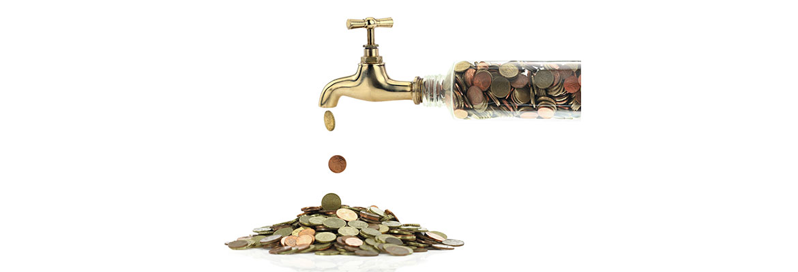
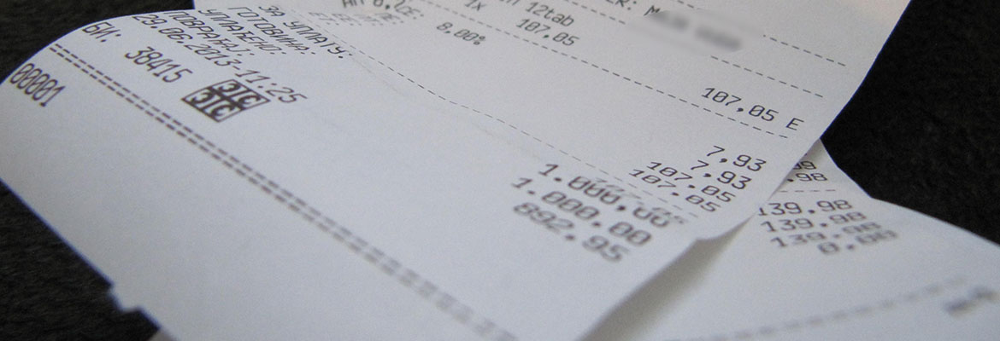

Ideja našeg bloga je da približimo neka rešenja i odgovore na probleme iz prakse sa kojima se susreću pravna lica, kao i oni koji žele da pokrenu svoj biznis u Srbiji. Želimo da prenesemo naša iskustva i iskustva naših klijenata kako bi oni koji prate naš blog mogli više vremena da posvete svom osnovnom biznisu, da nađu odgovore za svoje dileme na jednom mestu i izbegnu probleme sa nadležnim institucijama i poreskom upravom.
Nadamo se da će naš blog pomoći pokretanje nekog novog biznisa i olakšati poslovanje postojećim kompanijama. Želimo da uz naš blog budete uvek u korak sa vremenom - i ispred!
Uprava za sprečavanje pranja novca je organizovala krajem oktobra 2014.g. raspravu o Izmenama i dopunama Zakona o sprečavanju pranja novca i finansiranju terorizma. Početkom 2015.godine očekuje se usvajanje izmena pomenutog zakona.
Zakon o sprečavanju pranja noca i finansiranja terorizma bitan je za lica koja se bave pružanjem računovodstvenih usluga i usluga poreskog savetovanja, kao i za sve ostale obveznike ovog zakona (menjačnice, banke, revizore, društva za upravljanje, društva za osiguranje, brokersko-dilerska društva, advokate, organizatore igara na sreću, lica koja obavljaju delatnost posredovanja u prometu nepokretnosti, faktoring i forfeting usluge i sl.).
saznaj višeLikvidacija društva se može sprovesti kada društvo ima dovoljno sredstava za namirenje svih svojih obaveza, a Odluku o pokretanju likvidacije donosi skupština članova društva.
Likvidacija počinje danom registracije odluke o likvidaciji i objavljivanjem oglasa o pokretanju likvidacije na APR-u. Odlukom se imenuje likvidacioni upravnik (i isti se registruje u APR-u). Ukoliko društvo ne imenuje likvidacionog upravnika, zakonski zastupnici postaju likvidacioni upravnici.
Likvidacioni upravnik je dužan da poznatim poveriocima uputi pisano obaveštenje o pokretanju likvidacije društva, najkasnije u roku od 15 dana od dana početka likvidacije društva, kao i da objavi Oglas o pokretanju likvidacije.
saznaj više
U septembru ove godine Vlada Republike Srbije donela je odluku da visina minimalne cene rada u Srbiji u 2015. godini iznosi 121 dinar po radnom času, bez poreza i doprinosa za obavezno socijalno osiguranje.
Ova odluka će se primenjivati od 1. januara 2015. godine. Ovo povećanje odraziće se na povećanje prosečne minimalne zarade, te će u narednoj godini minimalna mesečna zarada zaposlenog iznositi 28.430,50 dinara.
Članom 49. stav 1. Zakona o računovodstvu ("Sl. glasnik RS", br. 62/2013), propisano je da se Pravilnik o bližim uslovima i postupku prijema, kontrole, registracije, obrade i objavljivanja finansijskih izveštaja i podataka o bonitetu pravnih lica i preduzetnika, kao i davanju podataka iz tih izveštaja ("Sl. glasnik RS", br. 2/2010 i 102/2010 - dalje: Pravilnik), primenjuje do sastavljanja finansijskih izveštaja za 2014. godinu. Ovim pravilnikom (član 3. stav 1.) propisano je da Agencija za privredne registre prima redovne godišnje i konsolidovane finansijske izveštaje za poslednju izveštajnu godinu, kao i vanredne finansijske izveštaje za tekuću godinu u skladu sa odredbama Zakona.
saznaj višeZakon o radu koji je stupio na snagu 29.jula 2014.godine doneo je dosta novina. Neke od značajnijih su:
Ogranak domaćeg privrednog društva nema svojstvo pravnog lica i predstavlja izdvojeni organizacioni deo društva preko koga se obavlja delatnost.
Društvo može (ali nema obavezu) registracije ogranka u APR-u. Obaveza registracije postoji samo ukoliko je zastupnik ogranka različit od zastupnika društva i/ili ukoliko je posebnim zakonom za određenu delatnost propisana takva obaveza.
saznaj višeZakon donosi nova rešenja kojima se stvara ambijent za bolje ostvarivanje potrošackih prava, a obaveze po ovom Zakonu imaju trgovci, pružaoci usluga (uključujući i turističke usluge) i sl.
Propisana je,obaveza isticanja prodajne odn.jedinične cene robe ili usluge, kao i sačinjavanja cenovnika ili tarifnika usluga koji mora biti istaknut u izlogu, odnosno poslovnim prostorijama ili na drugom mestu na kome se nudi vršenje usluga.
U ugostiteljskom objektu za pružanje usluga ishrane i pića na stolovima mora biti istaknut ili svakom potrošaču uručen cenovnik pre prijema porudžbine, a na zahtev potrošača i prilikom plaćanja. Takođe, cenovnik hrane i pića bora biti istaknut i na ulazu u ugostiteljski objekat.
saznaj višeUkoliko ste odlučili da osnujete kompaniju u formi društva za ograničenom odgovornošću, možete se obratiti nama i mi ćemo čitav postupak završtiti za Vas, a Vi se možete baviti bitnijim stvarima.
Ukoliko ipak odlučite da sami sprovedete proceduru osnivanja, neophodno je da preduzmete sledeće korake:
Prilikom osnivanja, pravnom subjektu je ostavljena mogućnost da se opredeli da li će se evidentirati u sistem PDV-a ili ne. Ukoliko procenjujete da ćete u narednih 12 meseci ostvariti promet preko 8.000.000 dinara, zahtev za evidentiranje u PDV možete podneti odmah ili bilo kada u toku godine (s tim da je bitno voditi računa o tome da je neophodno da se evidentirate za PDV čim ostvarite promet veći od 8 miliona dinara).
Obavezu evidentiranja u sistem PDV-a pravni subjekt nema sve dok ne ostvari promet preko 8.000.000.00 dinara u prethodnih godinu dana. Promet mora redovno da se prati, kako se ne bi propustio rok za evidentiranje kod poreske uprave jer su kazne značajne. Ukoliko procenjujete da će Vaš promet u narednih godinu dana biti manji od 8.000.000,00 dinara, ne morate se evidentirati u sistem PDV-a i Vaši proizvodi/usluge će biti za Vaše kupce povoljniji ukoliko ni oni nisu u sistemu PDV-a. Ukoliko ste preduzetnik i isključivo poslujete sa fizičkim licima, za Vas je povoljnije da ne budete u sistemu PDV-a. saznaj višeOvo je jedna od dilema koja muči veliki broj budućih poslodavaca. Odgovor na ovo pitanje zavisi od delatnosti kojom subjekt namerava da se bavi.
1. Zašto preduzetnik?
Za određene delatnosti za koje je zakonom propisano da nisu u obavezi da vode poslovne knjige i kod kojih je (očekivani) godišnji promet mali, naša preporuka je otvoriti preduzetničku radnju. Porez se u ovom slučaju može plaćati paušalno, te su manji troskovi poslovanja. Stopa poreza iznosi 10%. Novac koji podiže paušalni preduzetnik sa računa nije potrebno pravdati knjigovodstveno (što je kod ostalih privrednih subjekata obavezno).
Preduzetnici koji porez plaćaju paušalno, vode samo poslovnu knjigu o ostvarenom prometu (pregled faktura i uplata). Zahtev za paušalno oporezivanje podnosi se nadležnom poreskom organu. Poslednjim izmenama Zakona o porezu na dogodak građana ostavljena je mogućnost preduzetniku da se opredeli da sam isplacuje zaradu (kao kod preduzeća).
saznaj više
Prema Uredbi o određivanju delatnosti kod čijeg obavljanja ne postoji obaveza evidentiranja prometa preko fiskalne kase, delatnosti kod čijeg obavljanja ne postoji obaveza evidentiranja prometa preko fiskalne kase su: